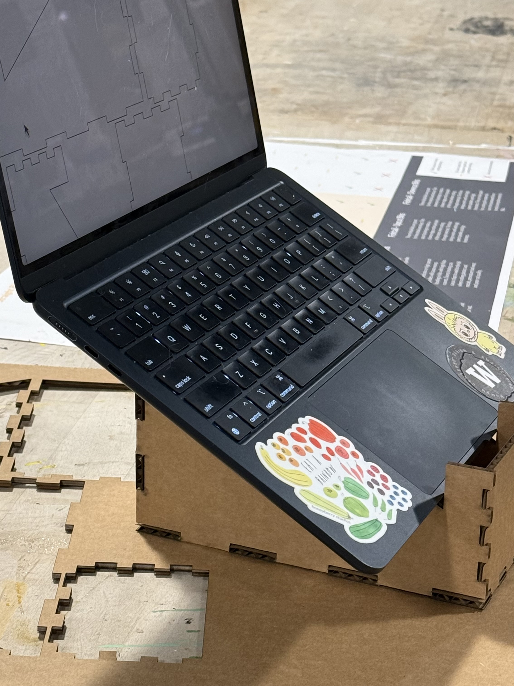
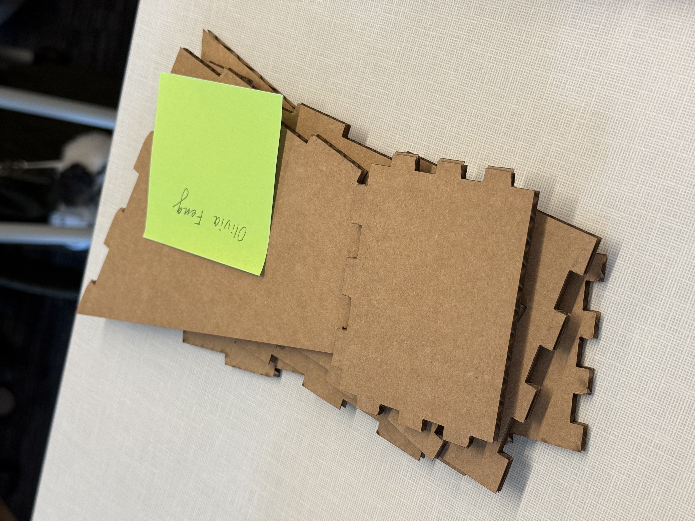
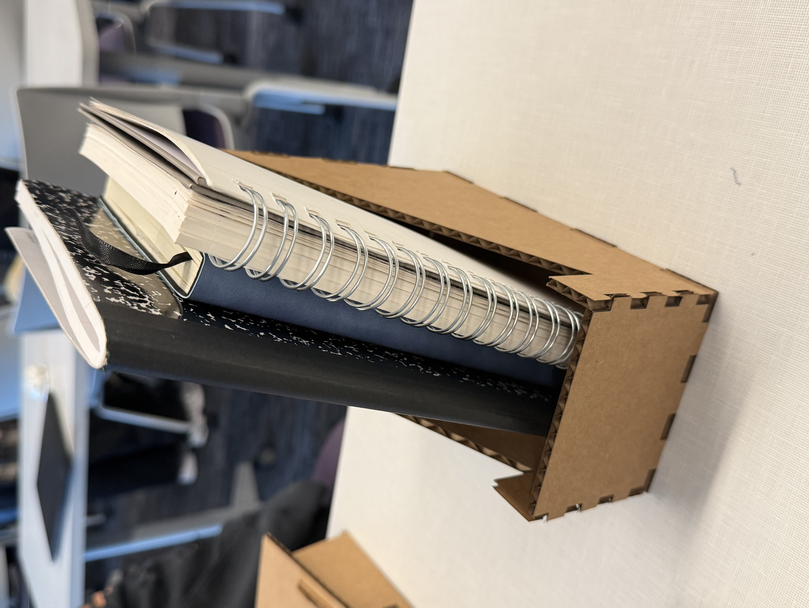
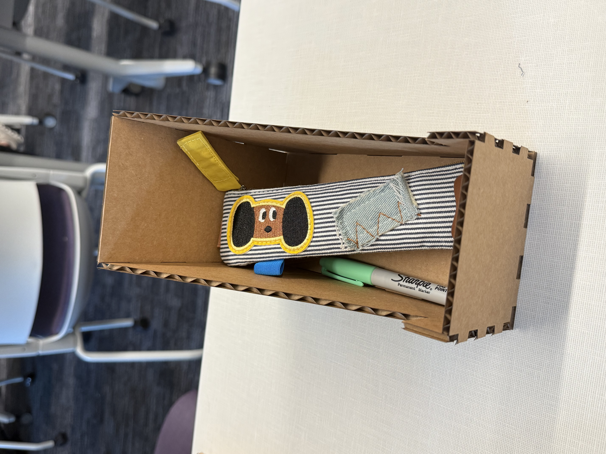
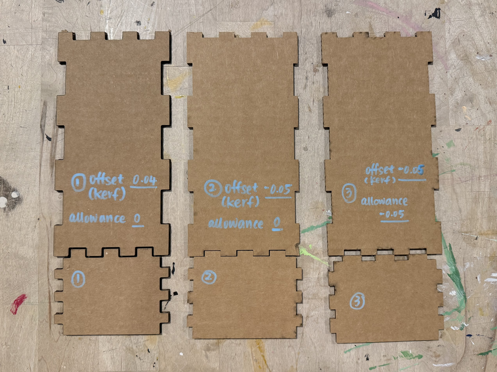

Placeholder: early measurements and planning for the laptop size, working angle, and storage volume.
Assignment 3
Designing and laser cutting
Multi-functional Laptop Stand
Multi-functionality
One structure supporting laptop use, flat-pack storage, book display, and desk organization.




Prompt
Design and build a tool for my own use: a laptop & tablet stand that can hold a device in a useful upright position.
The challenge was to design and build an object I could use in my own life with laser cutting techniques. My idea was a multi-functional computer stand that supports a laptop while also creating useful storage underneath the stand itself due to my habit of use and desk organization.
Requirements
Limited Sheet Material
The stand had to be cut from no more than two sheets of 18 x 24" flute and/or two sheets of chipboard.
No Glue or Tape
The structure could not use glue, tape, or any other additional fastening materials during assembly or use.
Flat-Packable
The stand had to disassemble into flat pieces that could be stored and transported in a backpack.
Feature Review / Design
My main feasibility concern was designing a computer stand for my 13-inch MacBook Air, which weighs about 1.25 pounds and measures about 21.5 cm by 30 cm. I already have a foldable computer stand at home, but the main problem is that my desk is usually full of small items like ink, pen nibs, erasers, and pens. Many times I do not even have enough clear space to unfold the stand comfortably.
That problem led to the core idea for this project: what if the stand could also serve as storage? If the desk is messy, I wanted to be able to throw small items into the stand and still use my computer. That became the main motivation behind the design. Beyond storage, I also wanted the stand to be more than a single-purpose object, so I designed it as a computer stand, storage unit, and small book stand in one.
On the usability side, I measured the largest angle that my computer can open and designed the stand accordingly, so the screen would stay upright without tipping forward. Since this is a medium-fidelity prototype, appearance was not the primary goal, but I still paid attention to the fit of every joint. After several adjustments, the final version looked clean and the joints matched together precisely, which made the structure feel both functional and visually satisfying.
Sketches
Sketches from different perspectives, scales, levels of detail, and early low-fidelity testing.
Placeholder for 2 to 3 vertical sketch images showing the stand from different viewpoints and early exploratory prototypes.
Prototype process
Fit testing
First three laser-cut fit tests using different kerf and allowance settings.

This image shows the first three fit tests I used to compare how different kerf and allowance combinations affected the tightness of the joints before deciding on the final settings.
Analysis
What I learned from designing, cutting, fitting, and assembling the stand.
This was my first time laser cutting. I learned Onshape through a series of YouTube videos and found out that it can generate auto laser joints and auto layout, which helped a lot. During the actual cutting process, though, the laser burn made the fit much looser than I wanted. I also noticed that when I hand-cut the cardboard, the pressure slightly reshaped the edges and the design did not work as intended. I believe that issue came from handmade inaccuracy, not from the design logic itself.
Once I moved into actual laser cutting, I was able to test-cut several times and better understand how kerf and allowance affected the fit. I found that even with a negative kerf making the cut line minimal, the joints still needed to be intentionally a bit oversized in order to become tight. A same-size joint did not work. After testing the parameters, I found that allowance was the setting that best controlled the print tolerance for my structure.
In the end, I learned that -0.03 allowance with a -0.05 kerf gave me the best fit. That combination made the joints feel very firm just through the structure itself, without glue or tape. More broadly, this assignment taught me how much prototyping with fabrication tools depends on testing real tolerances, not just drawing the ideal shape.
Critique & Feedback
User testing and critique notes.
In user testing, n = 5. People said that the stand was easy to assemble, felt very firm, and that the joins were inserted into each other very cleanly. One initial concern was whether the stand would be stable enough for a computer because the support area looks relatively narrow, but after testing, people found that it was actually very stable.
Testers also thought the stand was portable and a good size to bring around. They liked the small storage design and suggested that it could even be combined with a phone stand, which would add a fourth function. Another idea was to add more pockets on the side for a pen case or for additional storage.
Next steps
What I would improve in the next version.
Although no one specifically mentioned this in testing, I started thinking about heat. Since the stand also acts as a storage box underneath the computer, I am concerned that the laptop could get warm over time. In the next version, I would consider making the two side panels more open or perforated so heat can escape more easily while keeping the storage function.
AI use
This website was built mostly through vibe coding, although I designed the overall visual style myself. I wrote the content for each section on a single page first and also wrote instructions for each section as a starting point for implementation.
As I pasted content into the site, AI improved some of my writing while formatting it for the webpage and occasionally generated section titles. I can confirm that more than 95% of the content is still my original work.
One special case is the process section: I wrote most of that content in Chinese first so I could describe the build steps accurately, since I did not know the English phrasing for some of them.